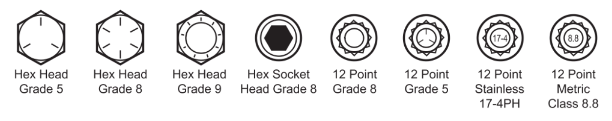
Fastener Torques for Reciprocating Compressors (image, p.1)
er-063/p1-image-1 · p.1 · chart
uncaptioned
Chart showing eight fastener head types with their grades and specifications, including hex head grades 5, 8, and 9, hex socket head grade 8, and 12 point head fasteners in various grades and material specifications.
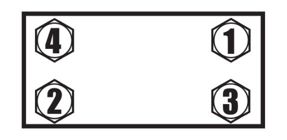
Recommendations for Torque Accuracy (image, p.2)
er-063/p2-image-1 · p.2 · schematic
uncaptioned, incomplete
Diagram showing four numbered positions or mounting points arranged in a rectangular pattern, likely indicating bolt or fastener locations for torque application on a reciprocating compressor component.
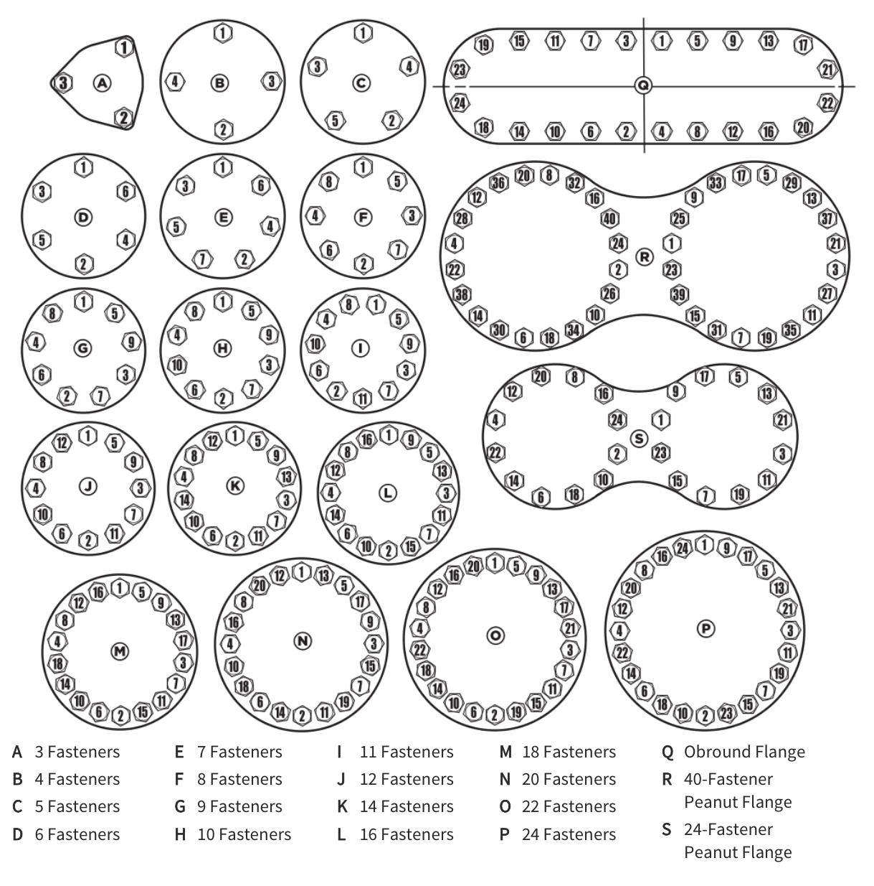
Recommendations for Torque Accuracy (image, p.3)
er-063/p3-image-1 · p.3 · chart
uncaptioned, overridden
Torque sequence diagrams for reciprocating compressor fasteners showing bolt tightening patterns for various flange types with 3 to 24 fasteners and obround/peanut flange configurations.
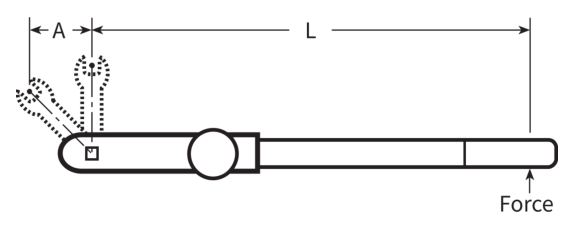
Recommendations for Torque Accuracy (image, p.3)
er-063/p3-image-2 · p.3 · line_drawing
uncaptioned
Schematic diagram of a torque wrench showing measurement points for torque accuracy, with dimension A indicating the grip zone and length L representing the overall wrench length, with force applied at the handle end.
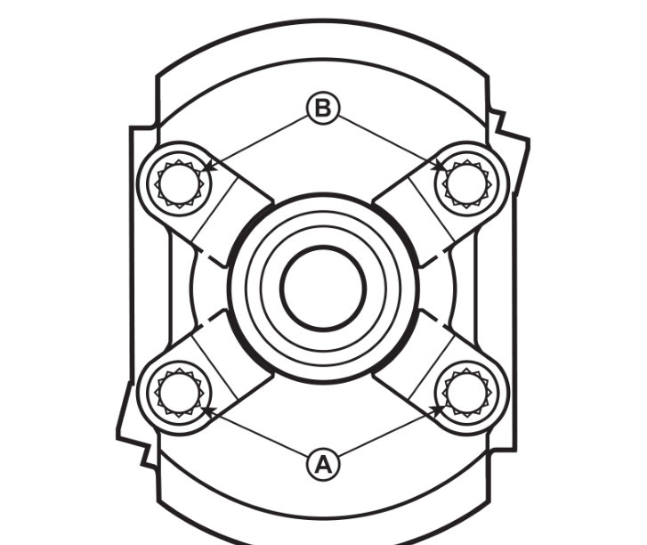
KBH Crosshead Torque Sequence (image, p.12)
er-063/p12-image-1 · p.12 · line_drawing
uncaptioned, overridden
Top-down view of a KBH compressor crosshead showing bolt torque sequence pattern with central circular hub and four corner mounting bolt positions labeled A and B.
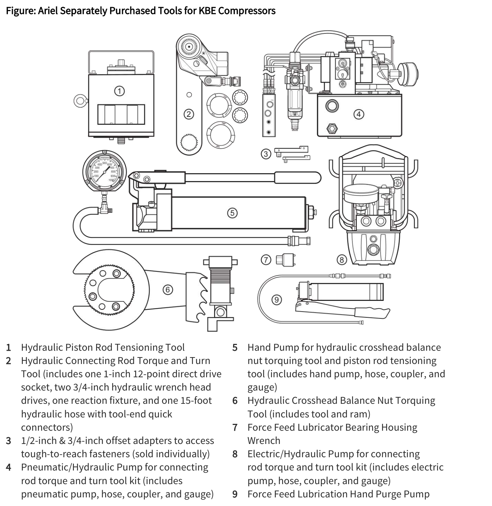
Ariel Separately Purchased Tools for KBE Compressors
kbe-manual/ariel-separately-purchased-tools-for-kbe-compressors · p.11 · exploded_parts
has_body_text
Exploded parts diagram showing nine separately purchased specialized tools for Ariel KBE compressor maintenance and assembly, including hydraulic pumps, torque tools, wrenches, and adapters with detailed labeled components.
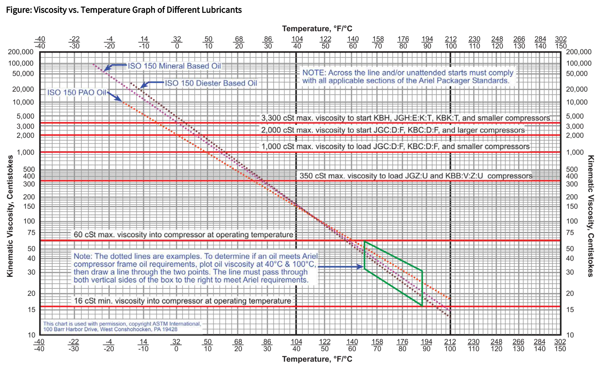
Viscosity vs. Temperature Graph of Different Lubricants
kbe-manual/viscosity-vs-temperature-graph-of-different-lubricants · p.33 · chart
overridden, has_body_text
A viscosity versus temperature graph showing lubricant performance curves for reciprocating compressors, including ISO 150 mineral-based oil, ISO 150 PAO oil, ISO 150 Diester-based oil, and various viscosity limits for different compressor models.
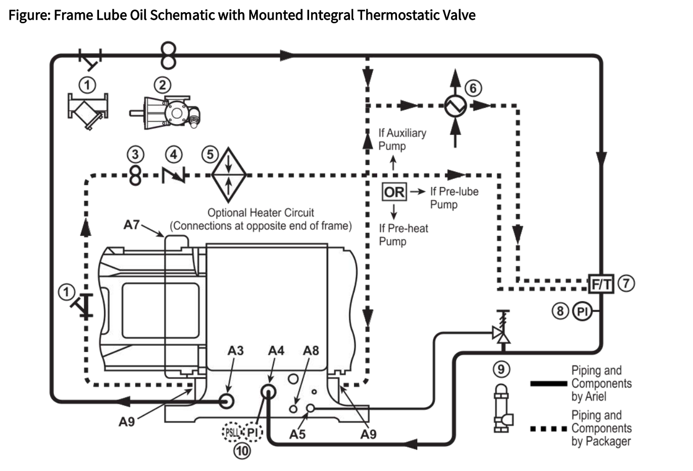
Frame Lube Oil Schematic with Mounted Integral Thermostatic Valve
kbe-manual/frame-lube-oil-schematic-with-mounted-integral-thermostatic-valve · p.37 · schematic
has_body_text
Frame lube oil schematic showing integrated thermostatic valve system with optional heater circuit, pump options (auxiliary, pre-lube, or pre-heat), and piping connections to frame-mounted components.
Staking a Set Screw
kbe-manual/staking-a-set-screw · p.75 · line_drawing
small
Top-down view showing the staking technique for securing a set screw with concentric circular markings and a center point.
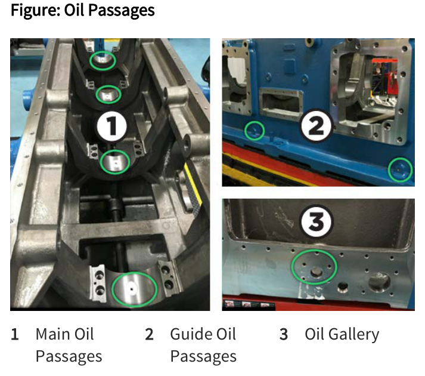
Oil Passages
kbe-manual/oil-passages · p.103 · photo
overridden
Three photographs showing oil passage locations in a reciprocating compressor, with green circles highlighting the main oil passages in the cylinder block, guide oil passages on the control panel, and the oil gallery in the cylinder head.
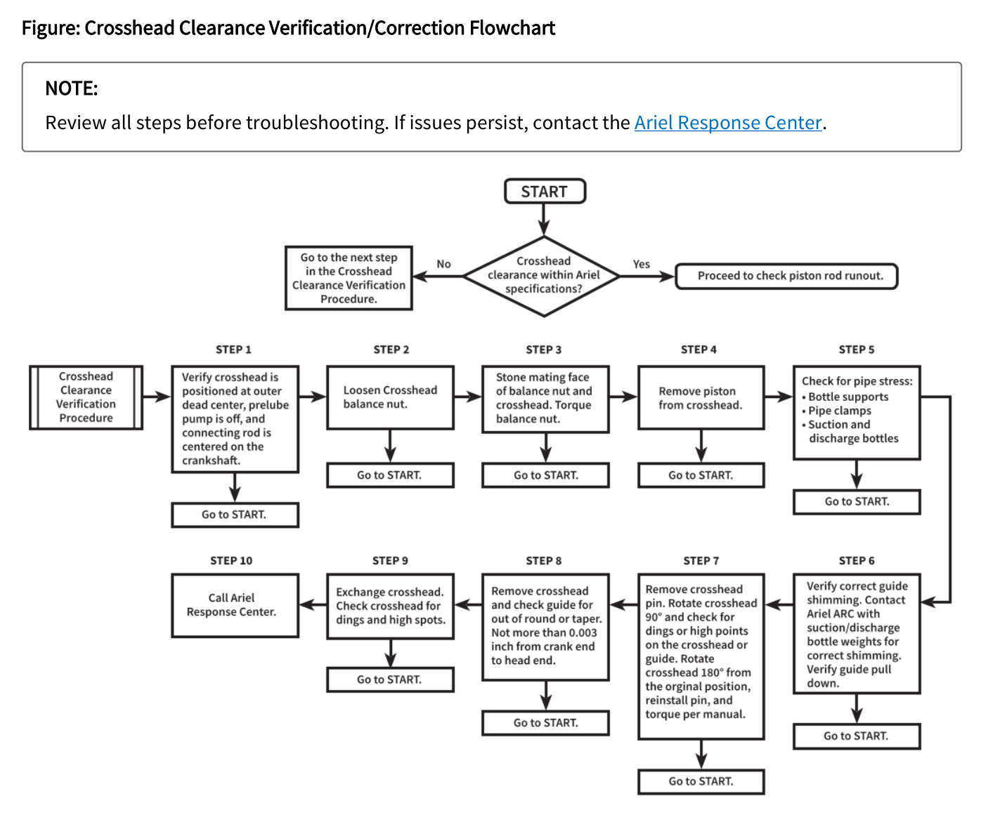
Crosshead Clearance Verification/Correction Flowchart
kbe-manual/crosshead-clearance-verification-correction-flowchart · p.123 · flowchart
overridden, has_body_text
Flowchart for verifying and correcting crosshead clearance in reciprocating compressors, starting with a decision point and proceeding through ten sequential maintenance steps including verification, loosening, mating, piston removal, and pipe stress checks.
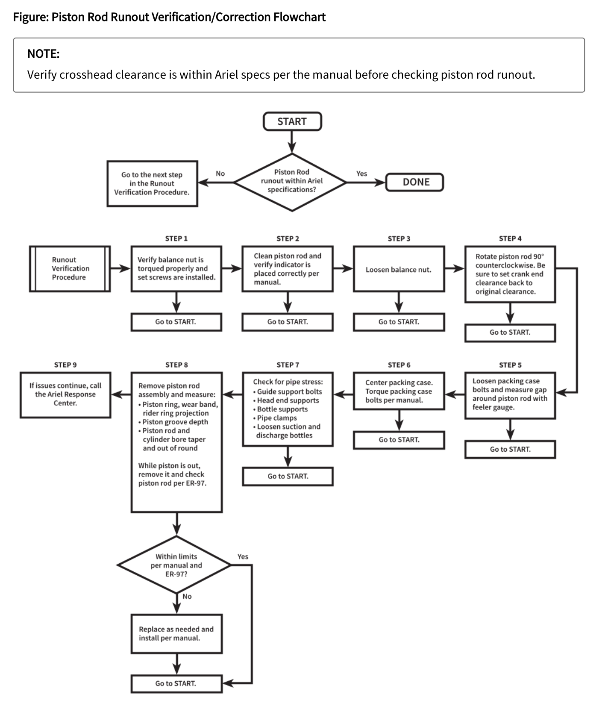
Piston Rod Runout Verification/Correction Flowchart
kbe-manual/piston-rod-runout-verification-correction-flowchart · p.124 · flowchart
overridden, has_body_text
A flowchart for verifying and correcting piston rod runout in a reciprocating compressor, including nine sequential steps for inspection, measurement, and correction procedures.
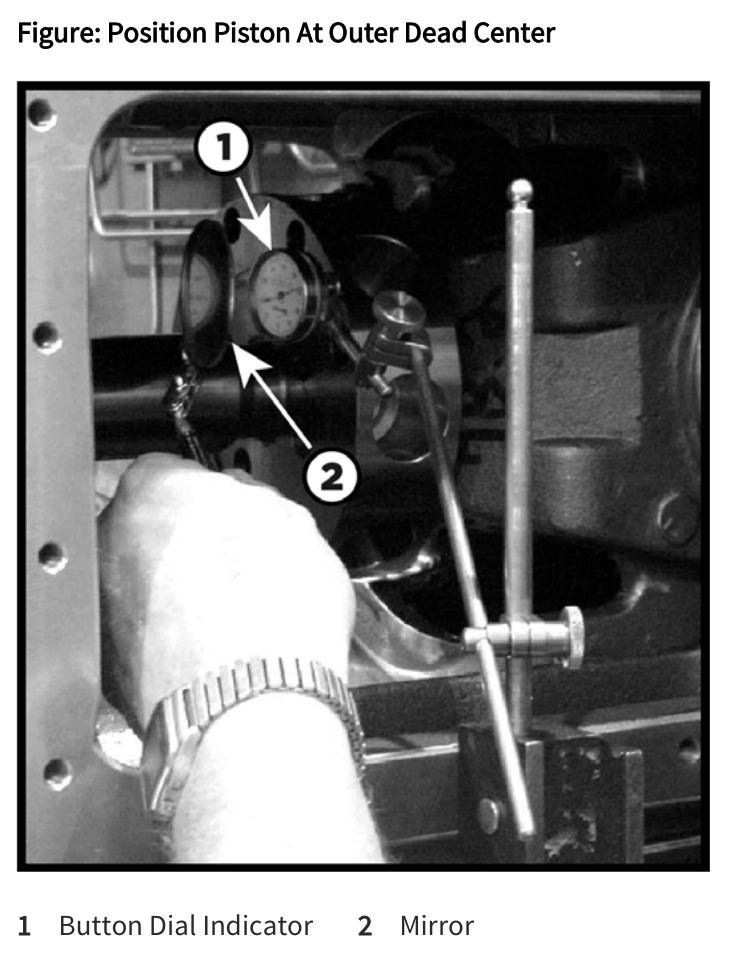
Position Piston At Outer Dead Center
kbe-manual/position-piston-at-outer-dead-center · p.137 · photo
overridden
Position piston at outer dead center using a button dial indicator and mirror to verify proper piston location during reciprocating compressor maintenance.

Typical Reciprocating Compressor
er-129/typical-reciprocating-compressor · p.1 · line_drawing
Isometric technical drawing of a typical reciprocating compressor showing the main structural and operational components including the cylinder head assembly, distance piece, crosshead cavity, and frame structure.

Typical Reciprocating Compressor
er-130/typical-reciprocating-compressor · p.1 · line_drawing
Isometric technical drawing of a typical reciprocating compressor showing the main structural and operational components including the cylinder head assembly, distance piece, crosshead cavity, and frame structure.

Compressor Guide Compartments
er-130/compressor-guide-compartments · p.2 · line_drawing
Three cross-sectional line drawings showing different compressor guide compartment configurations: Long Two Compartment Guide, Short Two Compartment Guide, and Standard Guide, with numbered compartments for identification.

Typical Reciprocating Compressor
er-140/typical-reciprocating-compressor · p.1 · line_drawing
Isometric technical drawing of a typical reciprocating compressor showing the main structural and operational components including the cylinder head assembly, distance piece, crosshead cavity, and frame structure.
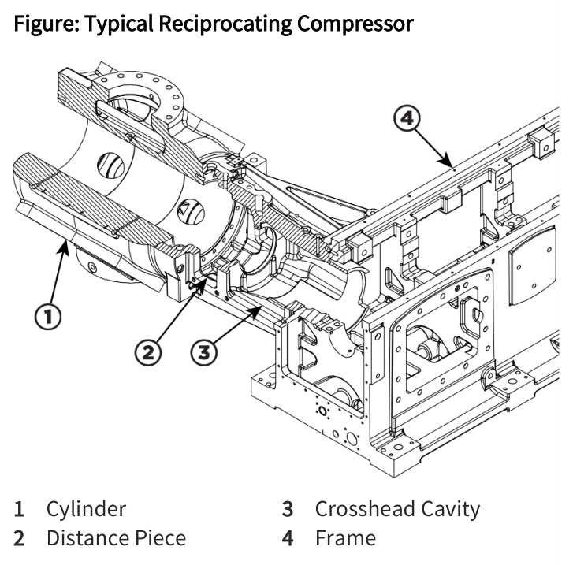
Typical Reciprocating Compressor
er-141/typical-reciprocating-compressor · p.1 · line_drawing
Isometric technical drawing of a typical reciprocating compressor showing the main structural and operational components including the cylinder head assembly, distance piece, crosshead cavity, and frame structure.
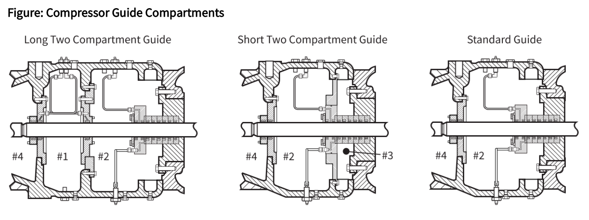
Compressor Guide Compartments
er-141/compressor-guide-compartments · p.2 · line_drawing
Three cross-sectional line drawings showing different compressor guide compartment configurations: Long Two Compartment Guide, Short Two Compartment Guide, and Standard Guide, with numbered compartments for identification.
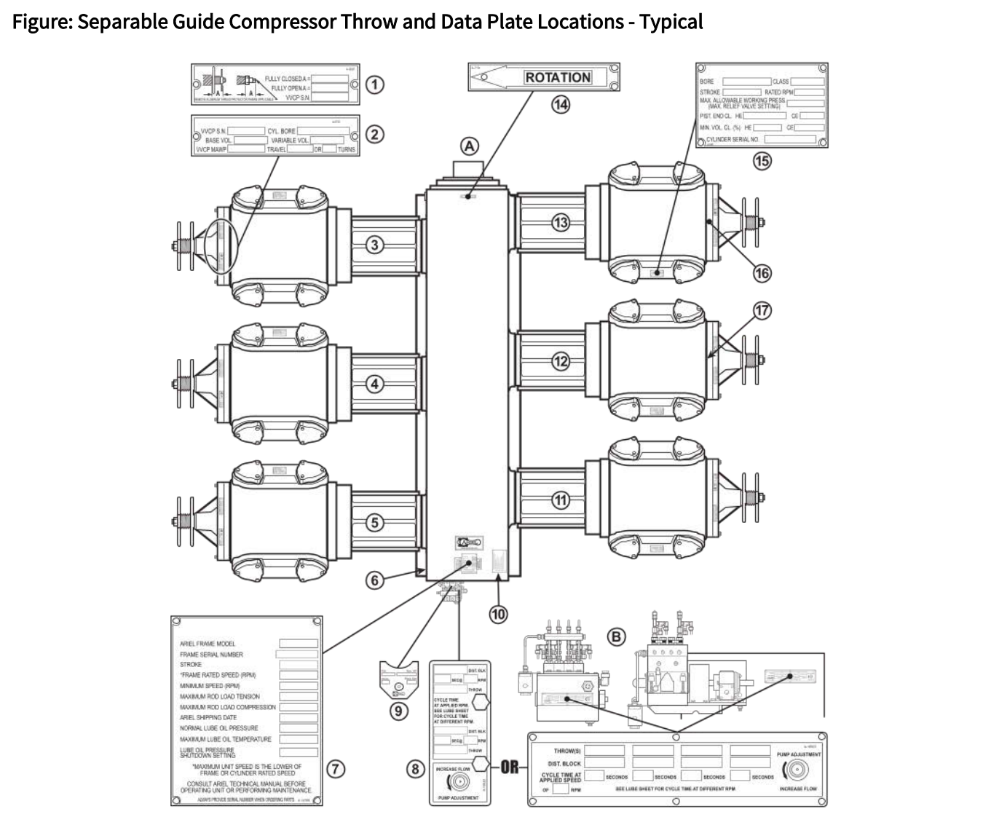
Separable Guide Compressor Throw and Data Plate Locations - Typical
kbe-manual/separable-guide-compressor-throw-and-data-plate-locations-typical · p.8 · line_drawing
Schematic diagram showing the typical arrangement of a separable guide reciprocating compressor with multiple cylinders, data plate locations, and numbered reference points for maintenance documentation.
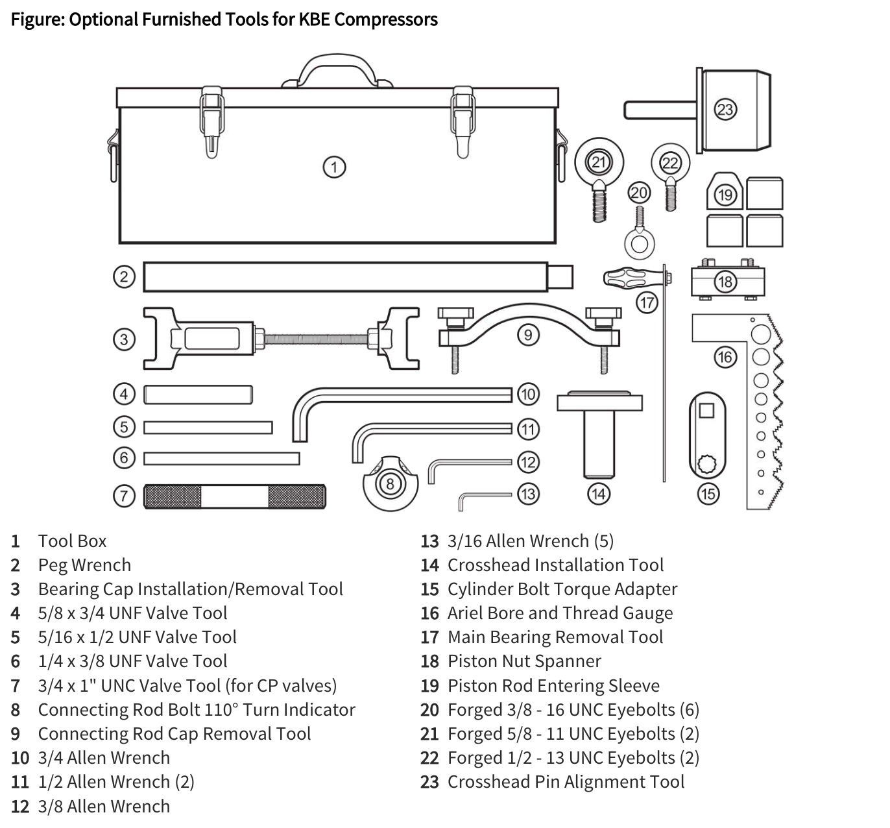
Optional Furnished Tools for KBE Compressors
kbe-manual/optional-furnished-tools-for-kbe-compressors · p.10 · exploded_parts
Complete set of optional furnished tools for KBE reciprocating compressors, including a tool box and 23 specialized maintenance tools such as wrenches, installation tools, and various fasteners.
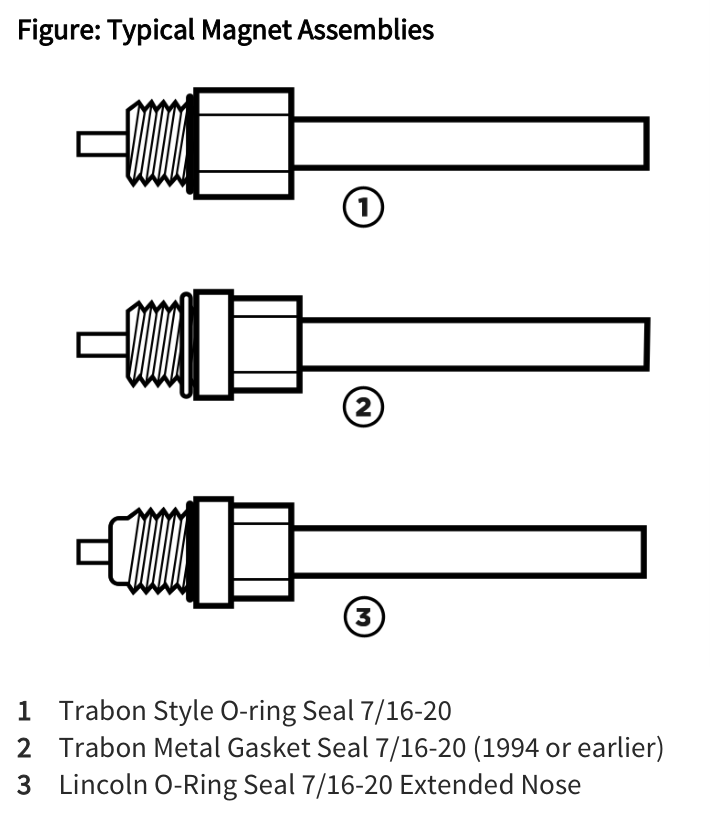
Typical Magnet Assemblies
kbe-manual/typical-magnet-assemblies · p.17 · line_drawing
Three typical magnet assemblies showing different seal configurations used in reciprocating compressors, including Trabon O-ring, Trabon metal gasket, and Lincoln O-ring extended nose versions.
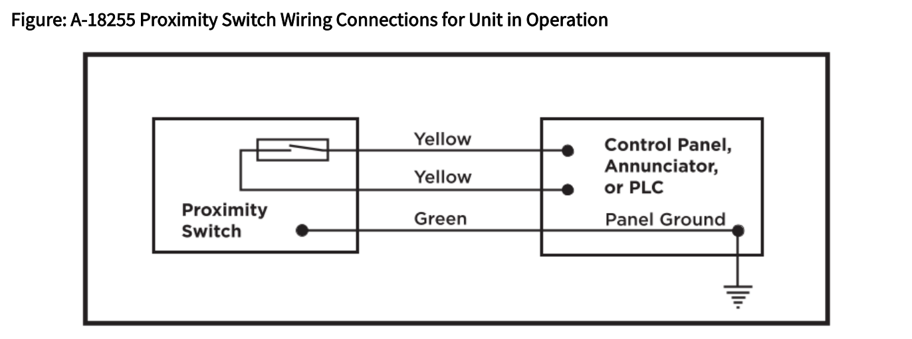
A-18255 Proximity Switch Wiring Connections for Unit in Operation
kbe-manual/a-18255-proximity-switch-wiring-connections-for-unit-in-operation · p.18 · schematic
Proximity switch wiring schematic showing connections from a proximity switch to a control panel, annunciator, or PLC via yellow and green wired connections with panel ground.
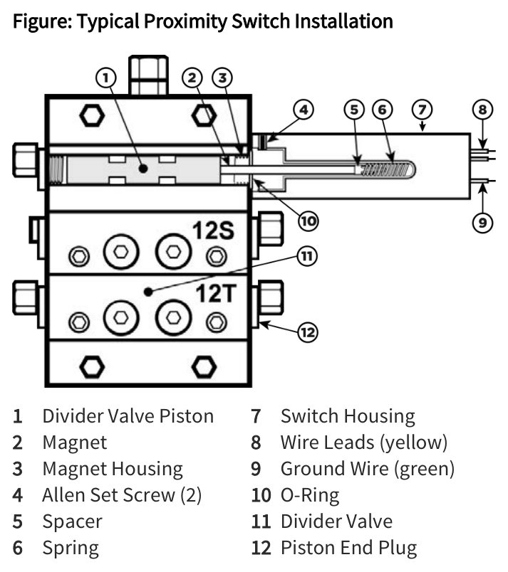
Typical Proximity Switch Installation
kbe-manual/typical-proximity-switch-installation · p.18 · line_drawing
Cross-sectional line drawing showing the typical installation of a proximity switch assembly mounted on a reciprocating compressor divider valve, with labeled components including magnets, pistons, springs, and electrical connections.
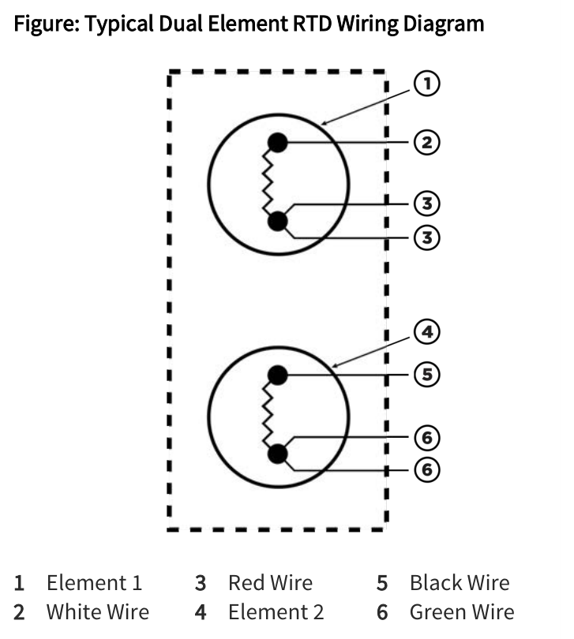
Typical Dual Element RTD Wiring Diagram
kbe-manual/typical-dual-element-rtd-wiring-diagram · p.21 · schematic
Schematic diagram showing a dual element RTD (Resistance Temperature Detector) wiring configuration with two sensing elements connected via color-coded wires.
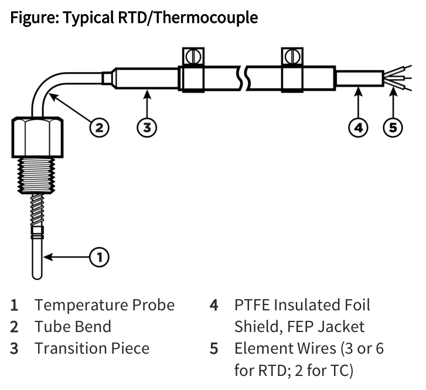
Typical RTD/Thermocouple
kbe-manual/typical-rtd-thermocouple · p.22 · line_drawing
Schematic diagram showing the typical construction of an RTD (Resistance Temperature Detector) or thermocouple probe assembly, including the temperature sensing element, protective tubing, and connecting wires.
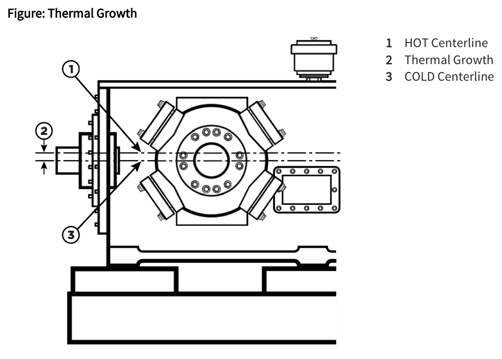
Thermal Growth
kbe-manual/thermal-growth · p.25 · line_drawing
Cross-sectional technical diagram of an industrial reciprocating compressor showing thermal growth effects, with labeled centerlines indicating hot and cold operating positions and the resulting thermal expansion.
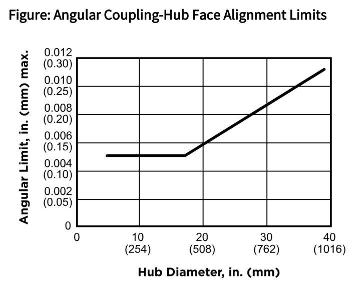
Angular Coupling-Hub Face Alignment Limits
kbe-manual/angular-coupling-hub-face-alignment-limits · p.26 · chart
Graph showing angular coupling-hub face alignment limits as a function of hub diameter, with measurements in both inches and millimeters. The chart displays a stepped and then linearly increasing relationship between hub diameter and allowable angular alignment tolerance.
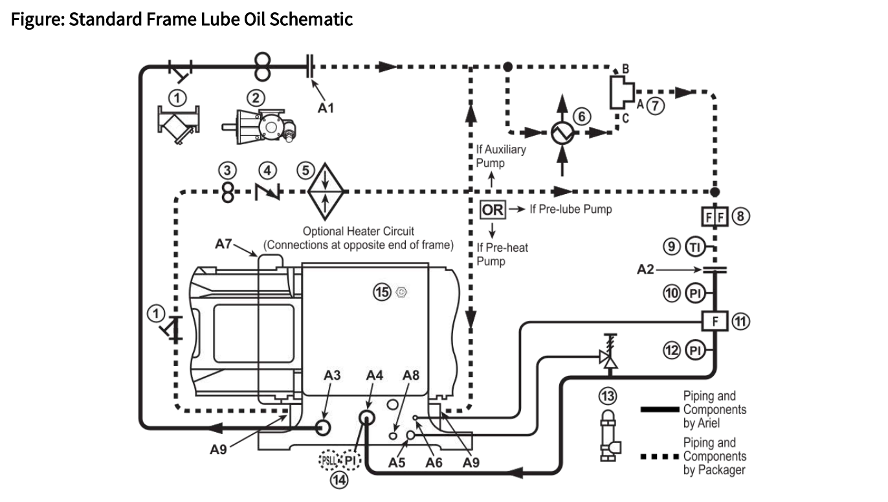
Standard Frame Lube Oil Schematic
kbe-manual/standard-frame-lube-oil-schematic · p.36 · schematic
A schematic showing the lube oil circulation system for a standard compressor frame, depicting the pump, heater circuit, and distribution lines to various components.
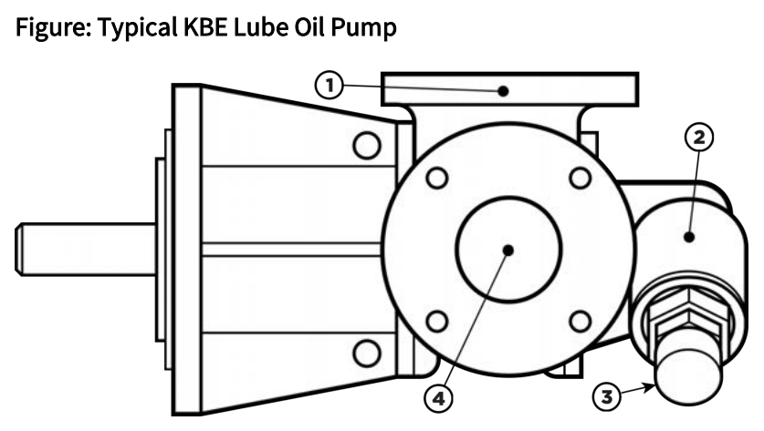
Typical KBE Lube Oil Pump
kbe-manual/typical-kbe-lube-oil-pump · p.38 · line_drawing
Technical line drawing of a typical KBE lube oil pump showing the internal components and assembly with four numbered callouts identifying key parts.
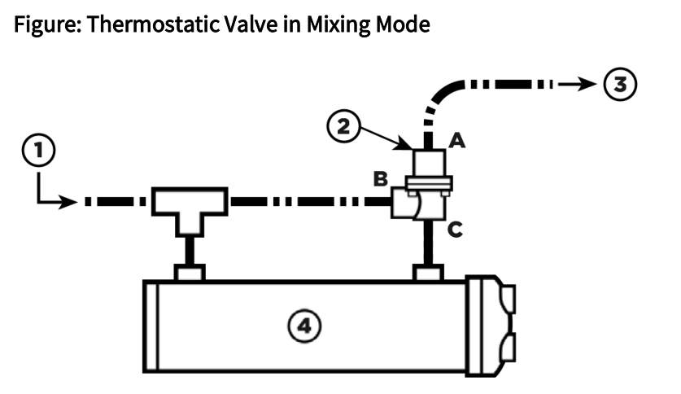
Thermostatic Valve in Mixing Mode
kbe-manual/thermostatic-valve-in-mixing-mode · p.39 · line_drawing
A schematic diagram showing a thermostatic valve assembly in mixing mode with inlet, outlet, and bypass passages controlling fluid flow and temperature.
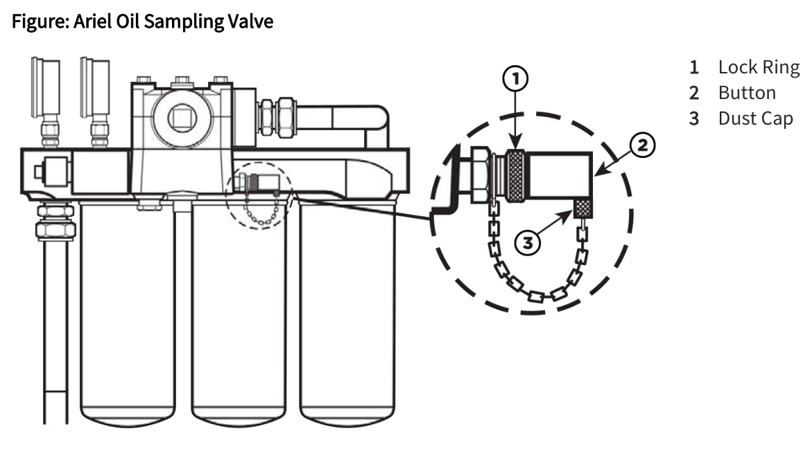
Ariel Oil Sampling Valve
kbe-manual/ariel-oil-sampling-valve · p.40 · line_drawing
Technical line drawing of an Ariel oil sampling valve assembly mounted on three oil collection tanks, showing the valve connection point with detailed callout of key components including lock ring, button, and dust cap.
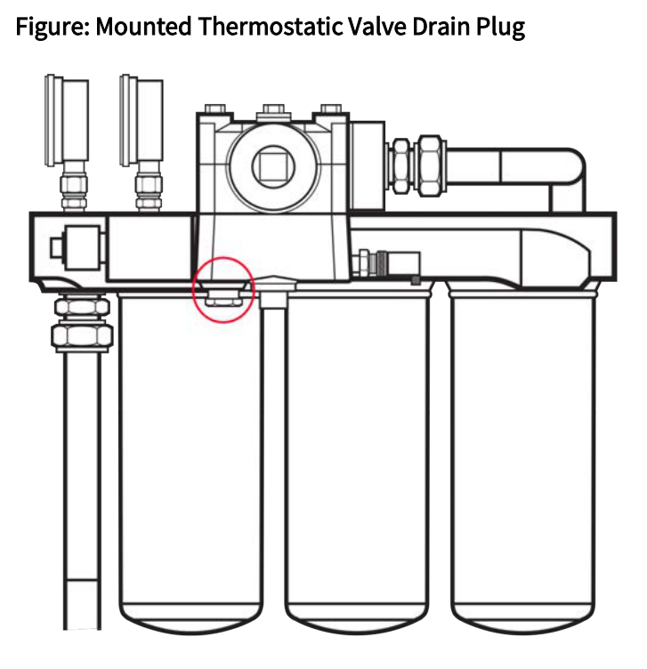
Mounted Thermostatic Valve Drain Plug
kbe-manual/mounted-thermostatic-valve-drain-plug · p.41 · line_drawing
Side view schematic of a mounted thermostatic valve drain plug assembly showing the valve body mounted above collection tanks with connecting piping and a drain point highlighted in red.
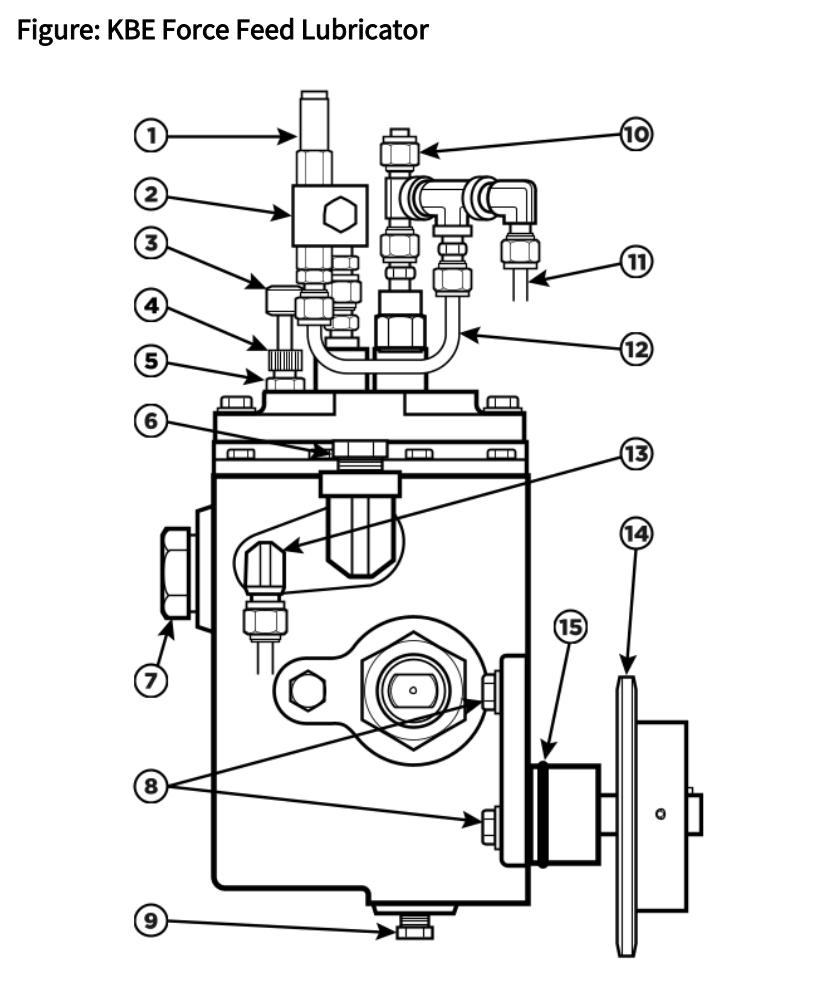
KBE Force Feed Lubricator
kbe-manual/kbe-force-feed-lubricator · p.44 · line_drawing
Schematic cross-section of a KBE Force Feed Lubricator showing the internal components and lubrication distribution system for reciprocating compressors. The diagram illustrates the pump mechanism, fluid chambers, and connection points for feed lines.
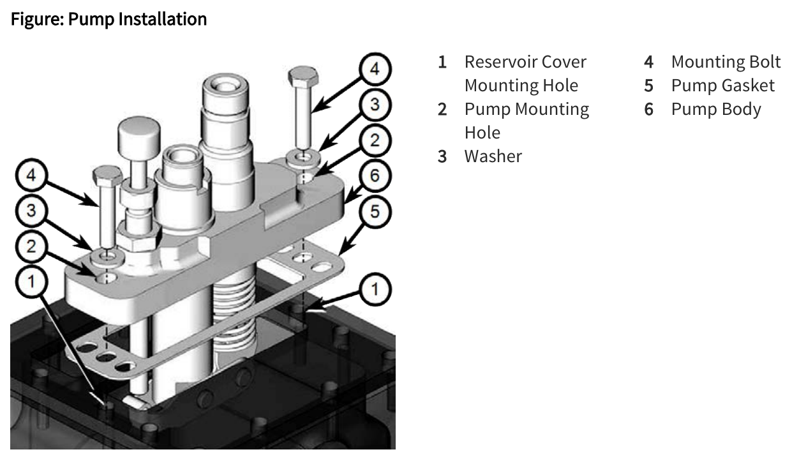
Pump Installation
kbe-manual/pump-installation · p.45 · exploded_parts
Exploded view diagram showing the assembly components and mounting configuration for a pump installation, including the reservoir cover, mounting hardware, gasket, and pump body positioned on a base.
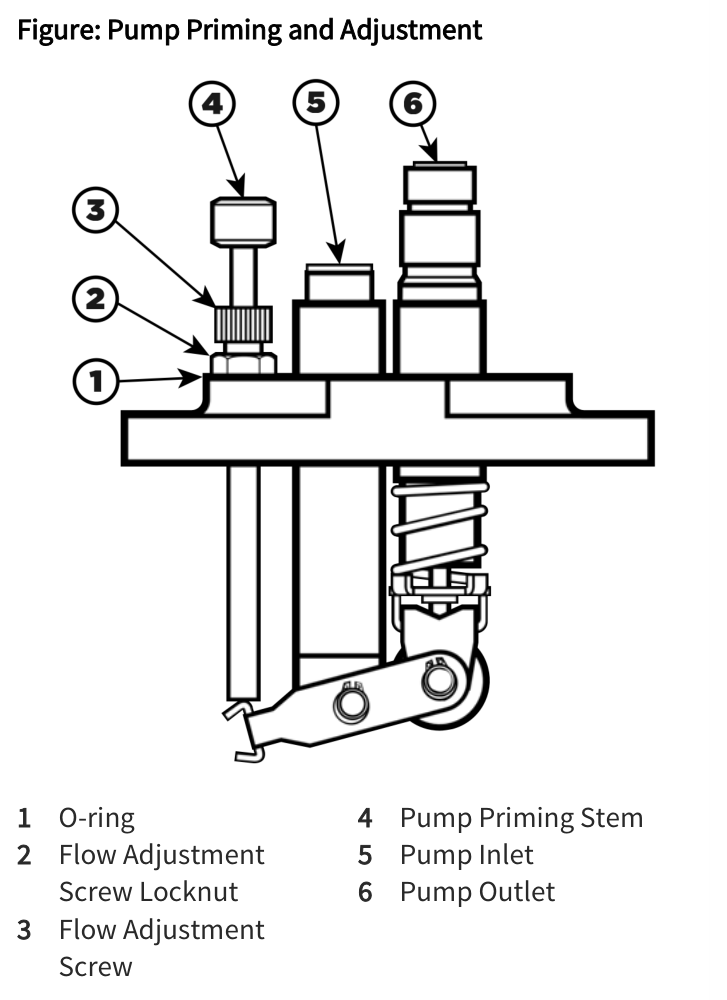
Pump Priming and Adjustment
kbe-manual/pump-priming-and-adjustment · p.46 · line_drawing
Technical line drawing showing pump priming and adjustment assembly with labeled components including the pump priming stem, inlet, outlet, and flow adjustment mechanisms.
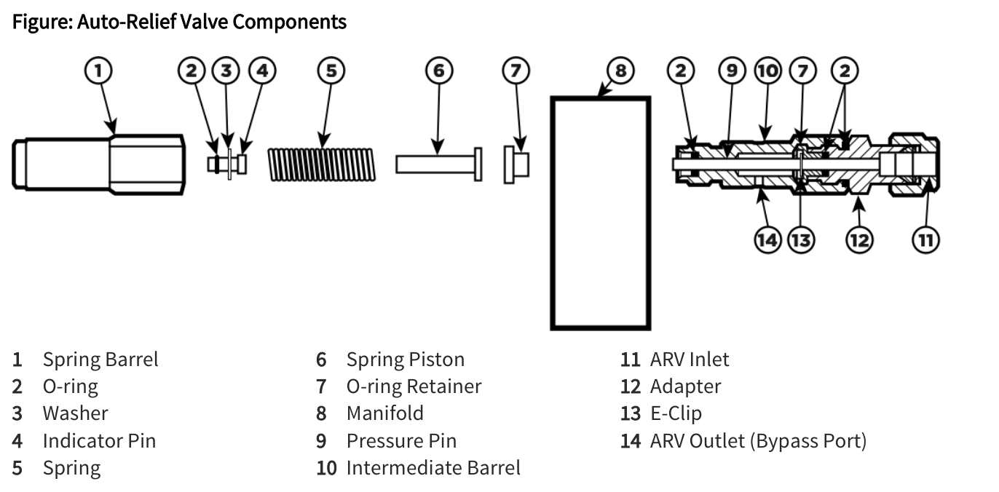
Auto-Relief Valve Components
kbe-manual/auto-relief-valve-components · p.50 · exploded_parts
Exploded diagram showing the component parts of an auto-relief valve assembly for an industrial reciprocating compressor, with 14 numbered components including springs, barrels, seals, and outlet/inlet ports.
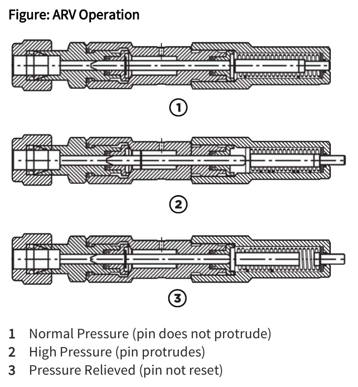
ARV Operation
kbe-manual/arv-operation · p.51 · line_drawing
Three cross-sectional diagrams showing the operational states of an ARV (Automatic Relief Valve) in a reciprocating compressor, depicting pin position changes under normal pressure, high pressure, and pressure-relieved conditions.
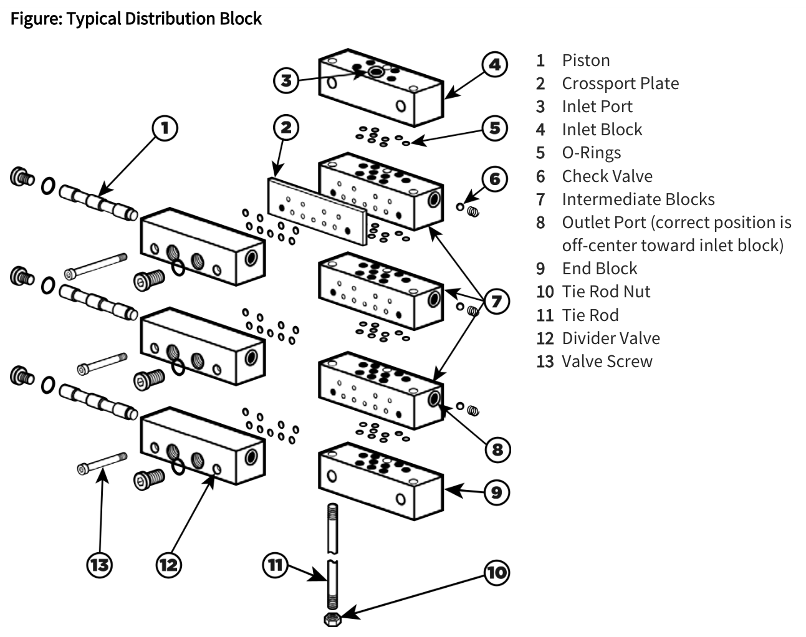
Typical Distribution Block
kbe-manual/typical-distribution-block · p.52 · exploded_parts
Exploded view of a typical distribution block assembly showing the stacked components and fastening hardware for a reciprocating compressor, with all 13 numbered parts labeled including pistons, blocks, valves, o-rings, and tie rods.
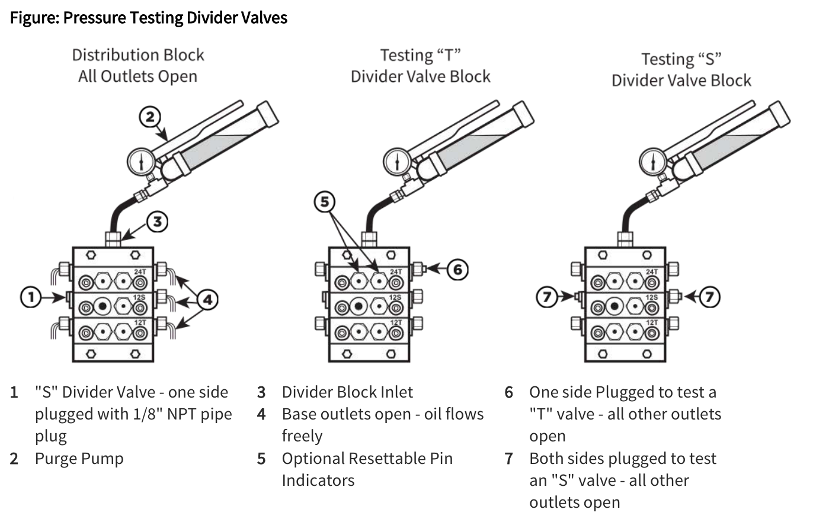
Pressure Testing Divider Valves
kbe-manual/pressure-testing-divider-valves · p.53 · line_drawing
Three configurations for pressure testing divider valves showing a distribution block with all outlets open, a testing setup for "T" divider valve, and a testing setup for "S" divider valve, each with different plug and outlet configurations.
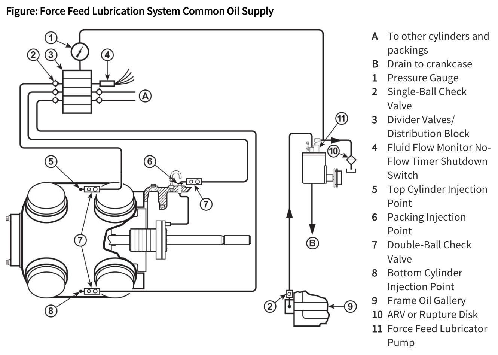
Force Feed Lubrication System Common Oil Supply
kbe-manual/force-feed-lubrication-system-common-oil-supply · p.56 · schematic
Force feed lubrication system schematic for industrial reciprocating compressor showing oil supply distribution from pump through check valves, divider block, and injection points to cylinders and packings.
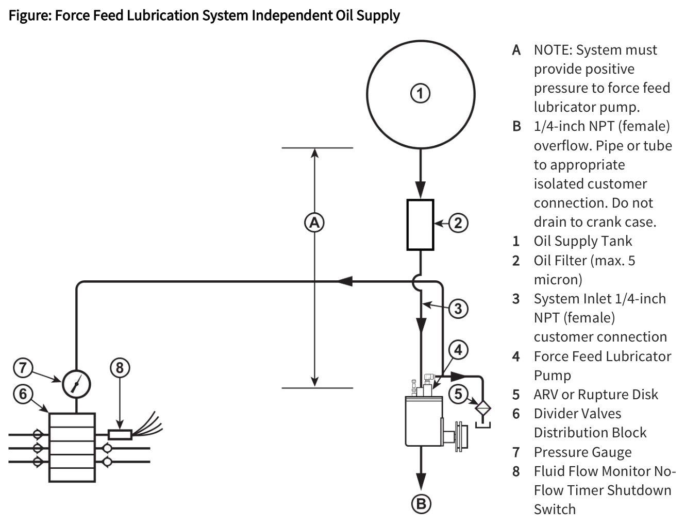
Force Feed Lubrication System Independent Oil Supply
kbe-manual/force-feed-lubrication-system-independent-oil-supply · p.57 · schematic
Schematic diagram of a force feed lubrication system with independent oil supply for reciprocating compressors, showing the flow path from oil supply tank through filter, pump, and distribution block.
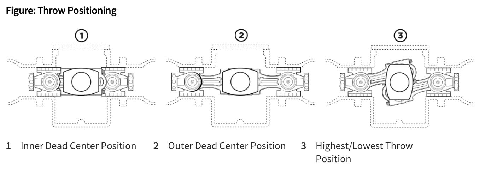
Throw Positioning
kbe-manual/throw-positioning · p.61 · line_drawing
Three diagrams showing the different throw positions in a reciprocating compressor: inner dead center position, outer dead center position, and highest/lowest throw position.
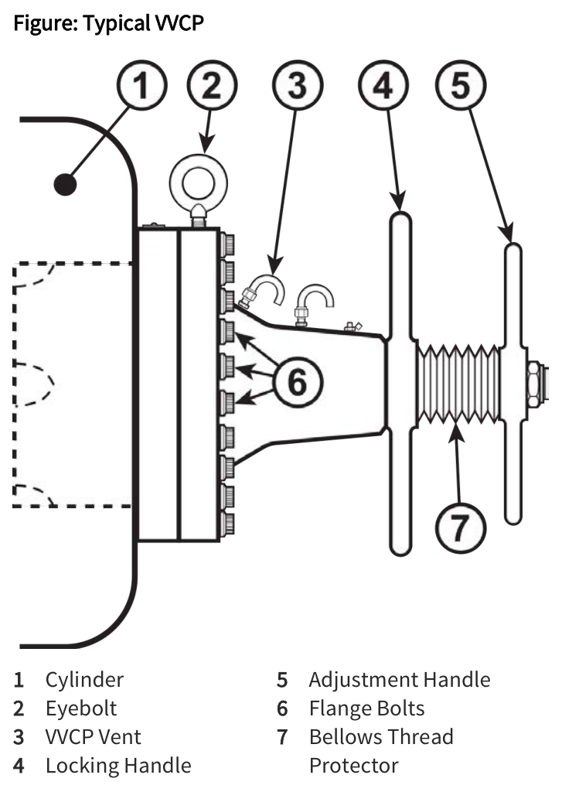
Typical VVCP
kbe-manual/typical-vvcp · p.63 · line_drawing
Schematic diagram of a typical WCP (Variable Capacity Preloader) showing the arrangement of cylinder, eyebolt, vent, locking handle, adjustment handle, flange bolts, and bellows thread protector components.
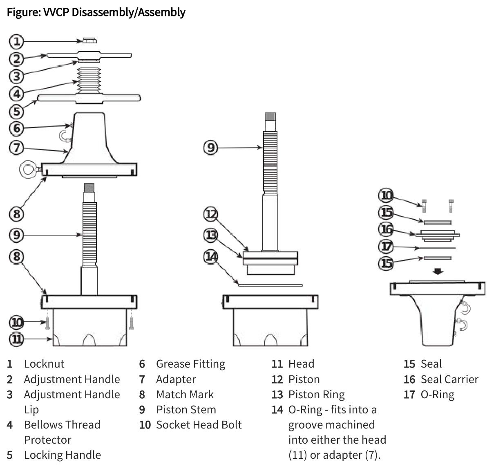
VVCP Disassembly/Assembly
kbe-manual/vvcp-disassembly-assembly · p.64 · exploded_parts
Exploded assembly diagram showing the disassembly/assembly sequence for a WCP (reciprocating compressor) piston with 18 numbered components including locknut, adjustment handles, bellows protector, locking handle, grease fitting, adapter, match mark, piston stem, socket head bolt, head, piston, piston ring, O-rings, and seal components.
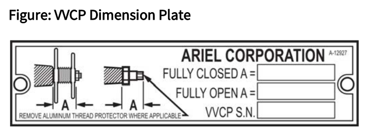
VVCP Dimension Plate
kbe-manual/vvcp-dimension-plate · p.66 · line_drawing
A technical dimension plate from Ariel Corporation showing a Variable Volume Control Plate (VVCP) with port configurations and dimensional callouts. The plate includes fields for fully closed area, fully open area, and serial number specifications.
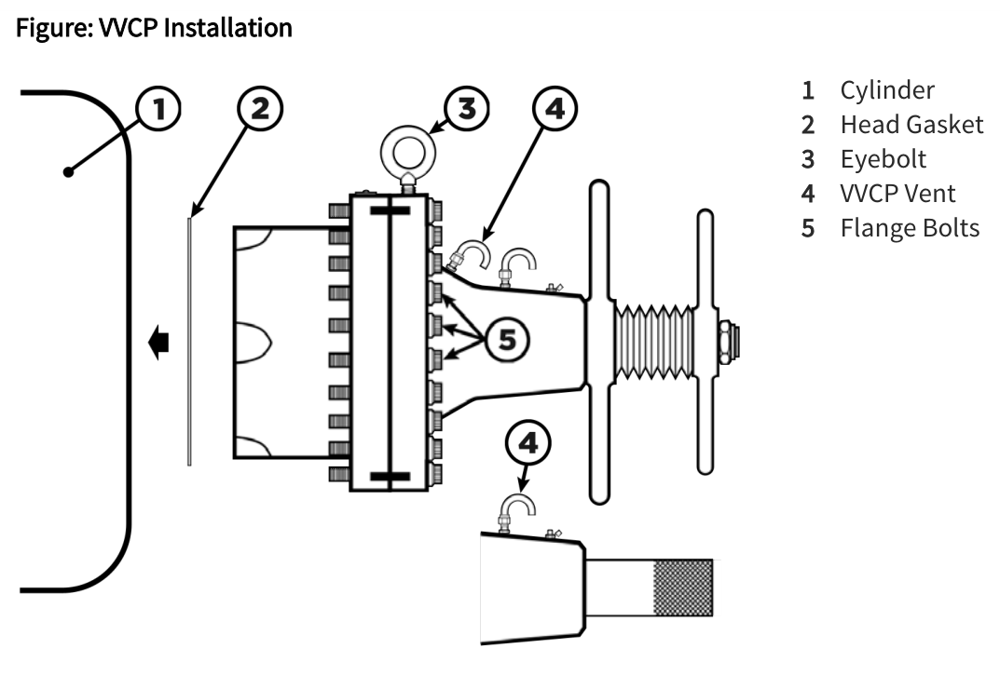
VVCP Installation
kbe-manual/vvcp-installation · p.66 · line_drawing
WCP (Wear/Wear and Corrosion Protection or similar) installation diagram showing the assembly of a cylinder head with gasket, eyebolt, vent connections, and flange bolts for an industrial reciprocating compressor.
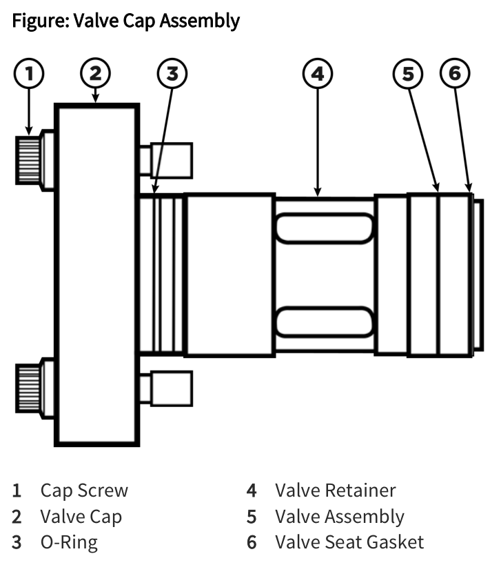
Valve Cap Assembly
kbe-manual/valve-cap-assembly · p.68 · exploded_parts
Exploded diagram of a valve cap assembly showing the arrangement and positioning of components including cap screw, valve cap, O-ring, valve retainer, valve assembly, and valve seat gasket.
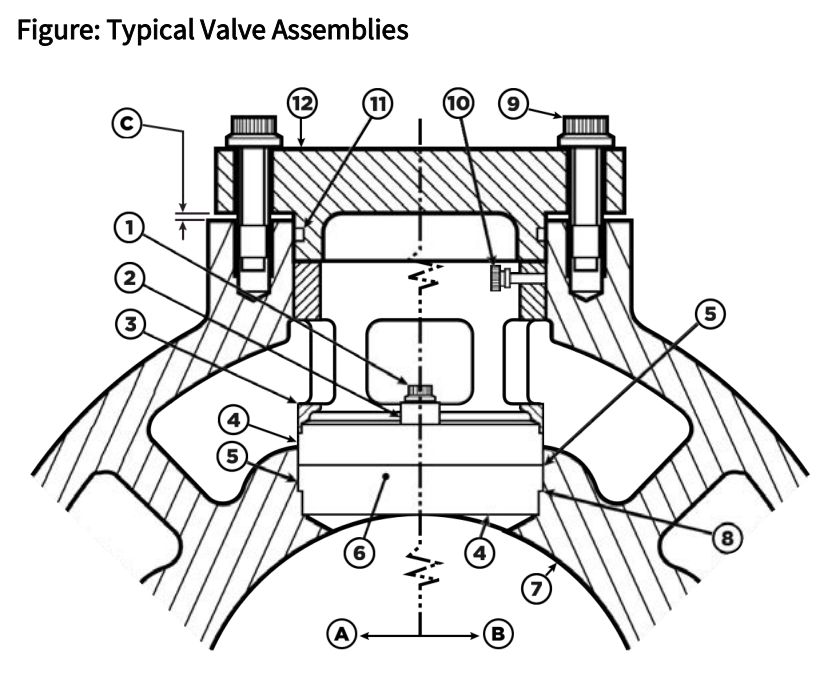
Typical Valve Assemblies
kbe-manual/typical-valve-assemblies · p.69 · line_drawing
Cross-sectional technical drawing of a typical valve assembly used in industrial reciprocating compressors, showing the internal components and flow passages labeled with numbered callouts.
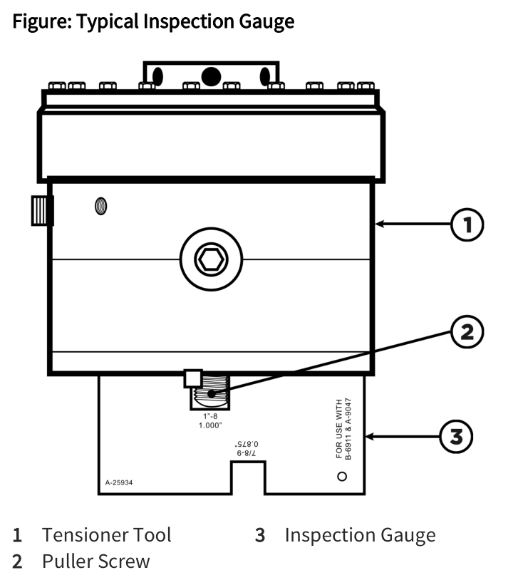
Typical Inspection Gauge
kbe-manual/typical-inspection-gauge · p.73 · line_drawing
A typical inspection gauge used in industrial reciprocating-compressor maintenance, showing the assembled tool with tensioner mechanism and measurement components.
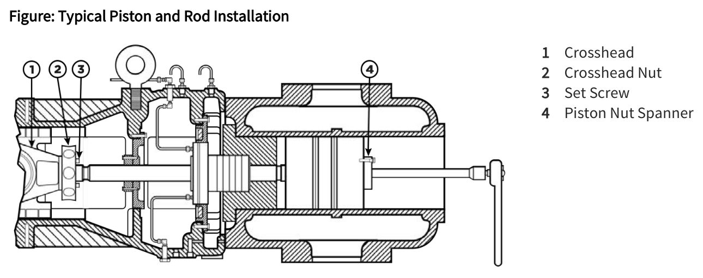
Typical Piston and Rod Installation
kbe-manual/typical-piston-and-rod-installation · p.75 · line_drawing
Cross-sectional line drawing showing the typical installation of a piston and connecting rod assembly in a reciprocating compressor, with labeled components including the crosshead, fasteners, and alignment tools.
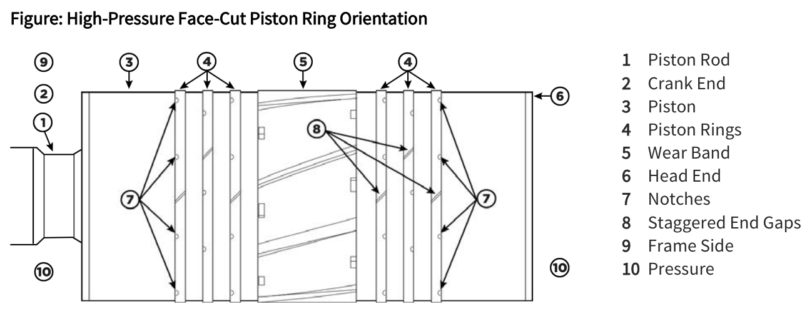
High-Pressure Face-Cut Piston Ring Orientation
kbe-manual/high-pressure-face-cut-piston-ring-orientation · p.78 · line_drawing
Cross-sectional line drawing showing the orientation and arrangement of high-pressure face-cut piston rings within a piston assembly, illustrating proper gap positioning and wear band placement.
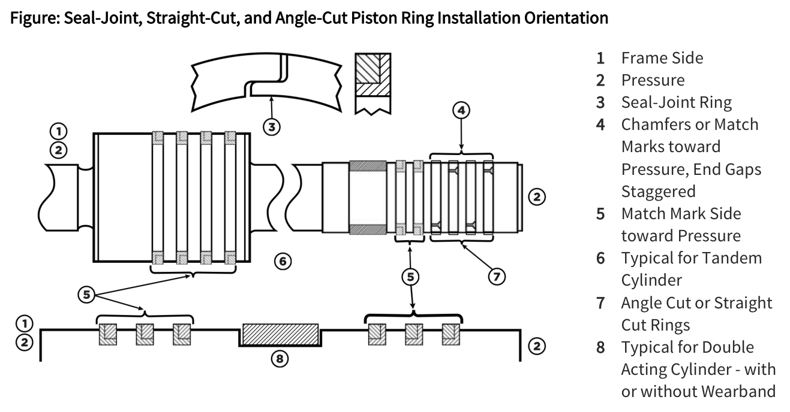
Seal-Joint, Straight-Cut, and Angle-Cut Piston Ring Installation Orientation
kbe-manual/seal-joint-straight-cut-and-angle-cut-piston-ring-installation-orientation · p.78 · line_drawing
Technical drawings showing piston ring installation orientation for seal-joint, straight-cut, and angle-cut rings in reciprocating compressor cylinders, with cross-sectional and side views depicting proper ring placement, gap staggering, and chamfer alignment.
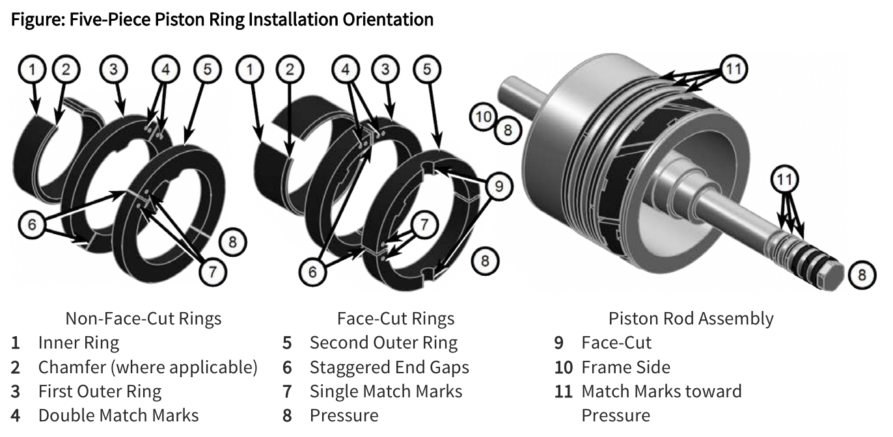
Five-Piece Piston Ring Installation Orientation
kbe-manual/five-piece-piston-ring-installation-orientation · p.79 · exploded_parts
Detailed technical diagram showing the orientation and installation sequence of five-piece piston rings for a reciprocating compressor, including non-face-cut rings, face-cut rings, and piston rod assembly with numbered components and installation orientation marks.
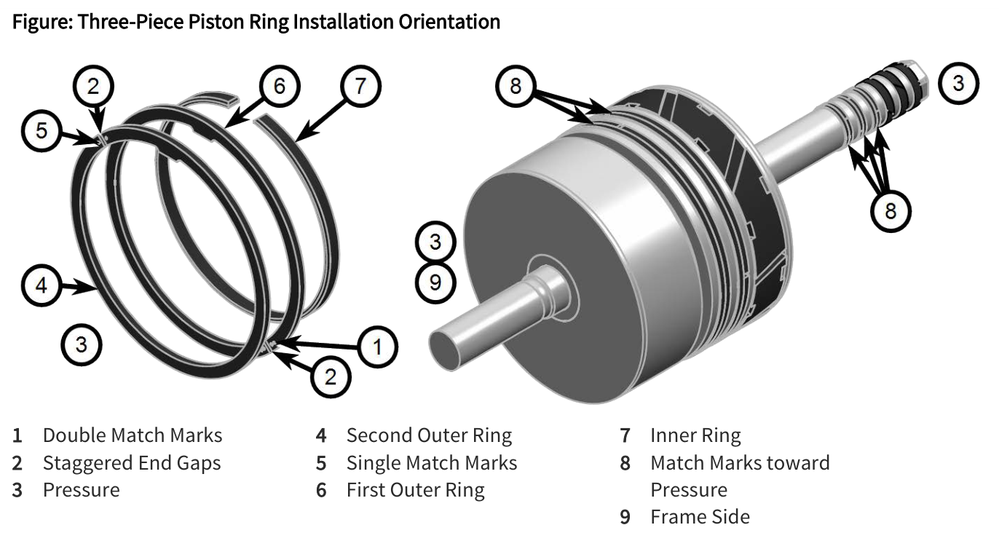
Three-Piece Piston Ring Installation Orientation
kbe-manual/three-piece-piston-ring-installation-orientation · p.79 · line_drawing
Three-piece piston ring assembly showing correct installation orientation on a piston with labeled components including match marks, end gaps, and pressure-facing sides for reciprocating compressor maintenance.
PB1 Pressure Breaker
kbe-manual/pb1-pressure-breaker · p.83 · line_drawing
Cross-sectional line drawing of the PB1 pressure breaker showing a circular component with three labeled sections marked "B" and a pressure port "P" indicated with an arrow pointing to a detailed callout.
VR Double-Acting Seal Set
kbe-manual/vr-double-acting-seal-set · p.83 · line_drawing
A VR double-acting seal set showing a cross-sectional view of concentric sealing rings with a pressure port labeled P and a detail callout of the pressure point.
Double VR1 Double-Acting Seal Set
kbe-manual/double-vr1-double-acting-seal-set · p.84 · line_drawing
Double VR1 double-acting seal set showing concentric circular seal rings with internal components labeled and cross-sectional detail views of the seal mechanism with pressure indicator.
PR1 Double-Acting Seal Set
kbe-manual/pr1-double-acting-seal-set · p.84 · exploded_parts
PR1 double-acting seal set assembly showing multiple concentric seal rings with labeled pressure points and a cross-sectional detail view of the seal profile.
RS3 Single-Acting Seal Set
kbe-manual/rs3-single-acting-seal-set · p.85 · exploded_parts
RS3 single-acting seal set showing multiple concentric ring seals with pressure application point P indicated by a detail callout.
RS4 Single-Acting Seal Set
kbe-manual/rs4-single-acting-seal-set · p.85 · line_drawing
RS4 single-acting seal set showing multiple ring components assembled in sequence with a pressure point indicator and cross-sectional detail view.
OW3 Oil Wiper Set
kbe-manual/ow3-oil-wiper-set · p.86 · line_drawing
Technical drawing of the OW3 oil wiper set showing a set of stacked circular wiper components with labeled piston rings and a detail view of the mounting bracket assembly.
Crosshead Bushing Replacement
kbe-manual/crosshead-bushing-replacement · p.87 · line_drawing
Cross-sectional line drawing showing the crosshead bushing assembly in a reciprocating compressor with callouts indicating the bushing location, force requirements, and support points for replacement procedures.
Crosshead Installation
kbe-manual/crosshead-installation · p.88 · line_drawing
Isometric line drawing showing the installation of a crosshead assembly in a reciprocating compressor using a specialized installation tool and metal plate for alignment and positioning.
Crosshead Alignment Tool
kbe-manual/crosshead-alignment-tool · p.89 · line_drawing
Technical line drawing of a crosshead alignment tool used in reciprocating compressor maintenance, showing the tool assembly with its connecting rod and pin components in cross-sectional view.
Typical Crosshead Balance Nut Hydraulic Torque Tool - Tightening Position
kbe-manual/typical-crosshead-balance-nut-hydraulic-torque-tool-tightening-position · p.90 · line_drawing
Schematic showing a crosshead balance nut hydraulic torque tool in tightening position, displaying the adapter, shoulder bolt, balance nut, spanner wrench, and hydraulic cylinder assembly for securing bolts on reciprocating compressor equipment.
Rod/Rod Cap Separation
kbe-manual/rod-rod-cap-separation · p.92 · line_drawing
Exploded line drawing showing the separation of a connecting rod and rod cap assembly in a reciprocating compressor, with labeled components including the top face, connecting rod bolts, rod cap, and rod.
Crank Rotation
kbe-manual/crank-rotation · p.93 · photo
Internal view of a reciprocating compressor crankshaft and connecting rod assembly, showing the crank rotation mechanism and pistons in their cylinders.
Prying Behind Crosshead
kbe-manual/prying-behind-crosshead · p.93 · photo
Maintenance procedure showing a pry bar being used to lift or separate the crosshead assembly from a reciprocating compressor. The image depicts a metal lever inserted behind the crosshead mechanism with associated bolted components visible.
Connecting Rod Bearing Installation
kbe-manual/connecting-rod-bearing-installation · p.94 · line_drawing
Technical diagram showing the proper assembly and installation of a connecting rod bearing assembly, with numbered callouts indicating bearing shells, dowels, rod caps, and lubrication points.
Typical Connecting Rod
kbe-manual/typical-connecting-rod · p.96 · line_drawing
A typical connecting rod for a reciprocating compressor showing correct orientation with bearing notches positioned on the top joint and turn indicator callout.
Typical Connecting Rod Vertical Jack Clearance Measurement
kbe-manual/typical-connecting-rod-vertical-jack-clearance-measurement · p.97 · photo
Three black and white photographs showing the procedure for measuring vertical jack clearance on a connecting rod in an industrial reciprocating compressor. The images demonstrate proper dial gauge positioning and measurement technique.
Typical Connecting Rod Thrust (Side) Clearance Measurement
kbe-manual/typical-connecting-rod-thrust-side-clearance-measurement · p.98 · photo
Three photographs showing the procedure for measuring connecting rod thrust or side clearance on a reciprocating compressor, with dial gauge measurement setup and internal compressor components visible.
KBE:K:T Main Bearing Installation/Removal Tool
kbe-manual/kbe-k-t-main-bearing-installation-removal-tool · p.100 · line_drawing
Top-down schematic view of a KBE:K:T main bearing installation and removal tool for a reciprocating compressor, showing the tool assembly around a crankshaft with cap screws and bearing cap.
Typical Crankshaft
kbe-manual/typical-crankshaft · p.102 · line_drawing
Technical line drawing of a typical industrial crankshaft showing the main structural components and their arrangement in a reciprocating compressor.
Pen Light Inspection
kbe-manual/pen-light-inspection · p.104 · photo
A technician uses a pen light to inspect a drilled metal component, checking internal bore holes and surfaces for defects or cleanliness during compressor maintenance.
Swabbing Oil Gallery
kbe-manual/swabbing-oil-gallery · p.104 · photo
Technician performing oil gallery swabbing maintenance on a reciprocating compressor, using a long-handled swab tool to clean internal oil passages in stacked machine components.
Swabbing Oil Passages
kbe-manual/swabbing-oil-passages · p.104 · photo
A technician uses a swab tool with a cotton tip to clean oil passages on a blue compressor component, with color-coded striping visible on the surface.
Typical Crankshaft Journal Bearing Vertical Jack Clearance Measurement
kbe-manual/typical-crankshaft-journal-bearing-vertical-jack-clearance-measurement · p.105 · photo
Three sequential photographs showing the process of measuring vertical jack clearance on a crankshaft journal bearing in an industrial reciprocating compressor using a vertical jack apparatus.
2-Throw Compressor with Crankshaft Distortion
kbe-manual/2-throw-compressor-with-crankshaft-distortion · p.106 · line_drawing
Cross-sectional line drawing of a 2-throw reciprocating compressor showing the crankshaft with distortion relative to its centerline, including main bearings and counterweights.
Crankshaft Distortion
kbe-manual/crankshaft-distortion · p.106 · line_drawing
A four-throw compressor crankshaft distortion diagram showing clearance measurements before and after flywheel lifting, with detail views of main jack and bottom journal clearances at two positions.
Typical Crankshaft Thrust Clearance Measurement
kbe-manual/typical-crankshaft-thrust-clearance-measurement · p.107 · photo
Three sequential photographs showing the procedure for measuring crankshaft thrust clearance on a reciprocating compressor using a dial gauge and feeler gauge technique.
JGE:K:T/6 and KBE:K:T:C:D:F Chain Drive Systems
kbe-manual/jge-k-t-6-and-kbe-k-t-c-d-f-chain-drive-systems · p.108 · line_drawing
Technical schematic showing two chain drive system configurations (A/B and C) for reciprocating compressors, with labeled sprockets, chains, and numbered component callouts.
Measuring to Check Chain Elongation
kbe-manual/measuring-to-check-chain-elongation · p.109 · line_drawing
A chain with six sprocket rollers showing two measurement methods to check chain elongation: measuring outside roller-to-roller spacing at 10 pitches versus inside roller-to-roller spacing at 10 pitches.
Typical Chain Idler Sprockets (Eccentrics)
kbe-manual/typical-chain-idler-sprockets-eccentrics · p.110 · line_drawing
Cross-sectional line drawings showing typical chain idler sprockets with eccentric design from two views, with labeled components for assembly and maintenance.
Typical Lube Oil Pump Chain Sprocket
kbe-manual/typical-lube-oil-pump-chain-sprocket · p.111 · line_drawing
Cross-sectional line drawing of a typical lube oil pump chain sprocket assembly showing the internal components and their arrangement for an industrial reciprocating compressor.
Typical Chain Deflection Measurement
kbe-manual/typical-chain-deflection-measurement · p.115 · line_drawing
Procedure for measuring chain deflection on a sprocket system by applying finger pressure to the chain span and measuring the vertical displacement using a machinist's scale positioned along a straight edge.
Allowable Chain Deflection, Inches (mm)
kbe-manual/allowable-chain-deflection-inches-mm · p.116 · chart
Chart showing allowable chain deflection in inches and millimeters as a function of measured chain length for industrial reciprocating compressor maintenance.
Piston Rod Runout Measurement
kbe-manual/piston-rod-runout-measurement · p.122 · line_drawing
Diagram showing piston rod runout measurement using dial indicators in both negative and positive directions as the piston moves along the rod slope.
Bolt Head Grade and Material Identification
kbe-manual/bolt-head-grade-and-material-identification · p.126 · chart
Chart showing 8 different bolt head types with their corresponding grades and materials, including hex head grades 5, 8, and 9, hex socket head grade 8, and 12-point head variants in different grades and materials.
Main Bearing Cap or Connecting Rod Cap Torque Sequence
kbe-manual/main-bearing-cap-or-connecting-rod-cap-torque-sequence · p.127 · line_drawing
A torque sequence diagram showing the proper order for tightening four bolts on a main bearing cap or connecting rod cap, numbered 1 through 4 in a cross pattern.
Pressure Containing Joint Recommended Torque Sequences
kbe-manual/pressure-containing-joint-recommended-torque-sequences · p.128 · line_drawing
Pressure containing joint recommended torque sequences showing circular flange patterns with numbered fastener positions for 3 to 24 fasteners, and rectangular connection patterns for various bolt arrangements in reciprocating compressor applications.
Torque Wrench with Angled Adapter
kbe-manual/torque-wrench-with-angled-adapter · p.129 · line_drawing
Torque wrench with angled adapter showing measurement dimensions and force application point for maintenance procedures.
Hold-down Fasteners
kbe-manual/hold-down-fasteners · p.143 · line_drawing
Cross-sectional line drawing showing the hold-down fastener locations on a compressor crosshead assembly, including guide-to-support fasteners and support foot fasteners.
Typical Cylinder Plugs and Tapped Holes
kbe-manual/typical-cylinder-plugs-and-tapped-holes · p.146 · photo
Typical cylinder plugs and tapped holes on a reciprocating compressor showing a main cylinder body with three labeled components: two types of plugs and their threaded configurations for cylinder maintenance.
Ariel Lubricants, Thread Sealants, and Preservatives
kbe-manual/ariel-lubricants-thread-sealants-and-preservatives · p.153 · photo
Product catalog showing seven lubricants, thread sealants, and preservatives used in reciprocating compressor maintenance, with numbered callouts identifying each product and its application.
OL0511 Guide Support Outline, H:E:ET Class Cylinders
ol0511/sheet-1 · p.1 · cad
Technical drawing showing guide support outline for H:E:ET class cylinders, including top view, side view, front view, and detailed cross-section with dimensions and fastener specifications.
OL0782 Encoder Shaft Attachment Details
ol0782/sheet-1 · p.1 · cad
Encoder shaft mounting dimensions table with detailed specifications for various frame classes, including drilling parameters, tap sizes, and cover dimensions. Engineering drawing shows cross-section view of mounting configuration.